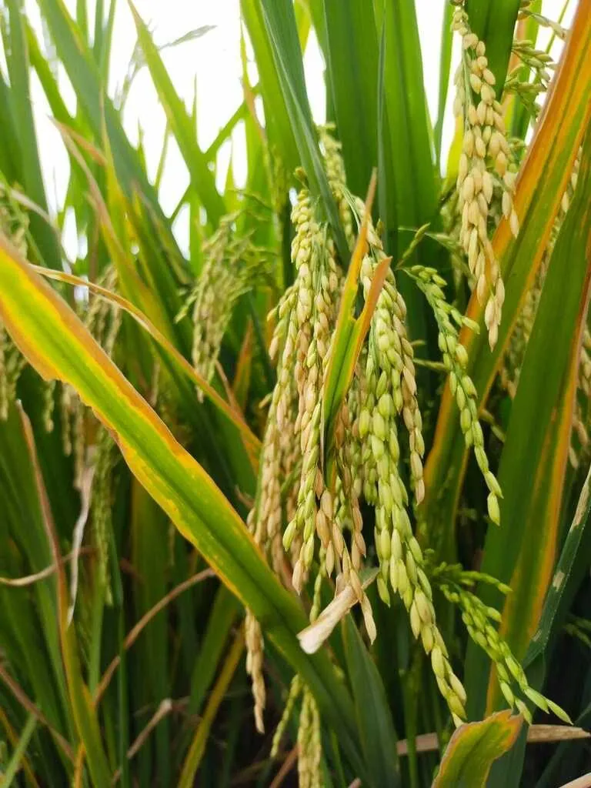

农作物与经济植物 · 植物界
水稻 Oryza sativa

水稻是亚洲最重要的粮食作物之一，籽粒脱壳后就是大米，养活了世界一半以上的人口，栽培历史逾万年。
- 分类
- 门被子植物门纲单子叶植物纲目禾本目科禾本科属稻属
- 栖息环境
- 热带、亚热带水田与湿润平原，喜高温多湿和充足光照
- 地理分布
- 原产中国与南亚，现广泛栽培于亚洲、非洲及美洲灌区
- 保护级别
- 暂无评估（栽培作物）
物种志
水稻是一年生草本植物，株高 0.6–1.5 m，根系为须根系，茎秆中空有节。叶片带状披针形，叶鞘抱茎，叶舌明显。稻穗为圆锥花序，小穗含一朵可育小花，自花授粉，成熟时籽粒呈淡黄或褐色，去壳后即糙米，再碾磨成白米。根据栽培环境可分为水稻和旱稻，按生育期分为早稻、中稻和晚稻。
水稻原产中国长江流域与南亚一带，考古证据显示中国在约 1 万年前已开始驯化野生稻；如今从亚洲季风区到非洲、美洲的灌区都有种植。它喜高温多湿，需充足水分与肥沃土壤，多在水田中栽培。全球约一半人口以稻米为主食，中国是最大生产国之一。除食用外，稻草可作饲料、编织和还田，稻壳可发电、制板，是综合利用价值很高的作物。
形态与习性
- 株高0.6–1.5 m，茎秆中空有节
- 花序圆锥花序，自花授粉
- 生育期早稻约 100–120 天
- 栽培方式育秧移栽或直播
- 适宜温度25–32 ℃，喜高温多湿
- 主要用途主粮，稻草与稻壳可综合利用
- 驯化历史约 1 万年前在中国被驯化
趣味知识
- 考古发现中国长江流域在约 1 万年前已有水稻驯化痕迹。
- 世界上约一半人口以稻米为主食，亚洲产量占九成以上。
- 稻米脱壳后是糙米，再碾去米糠层才成为白米。